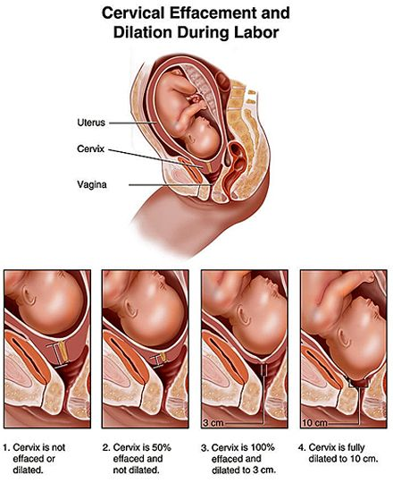
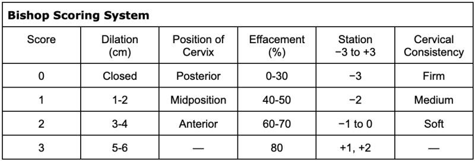
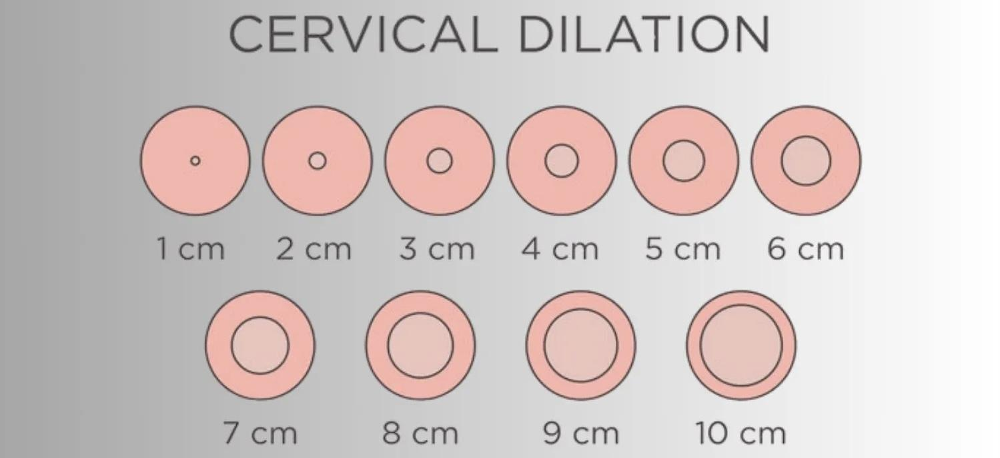
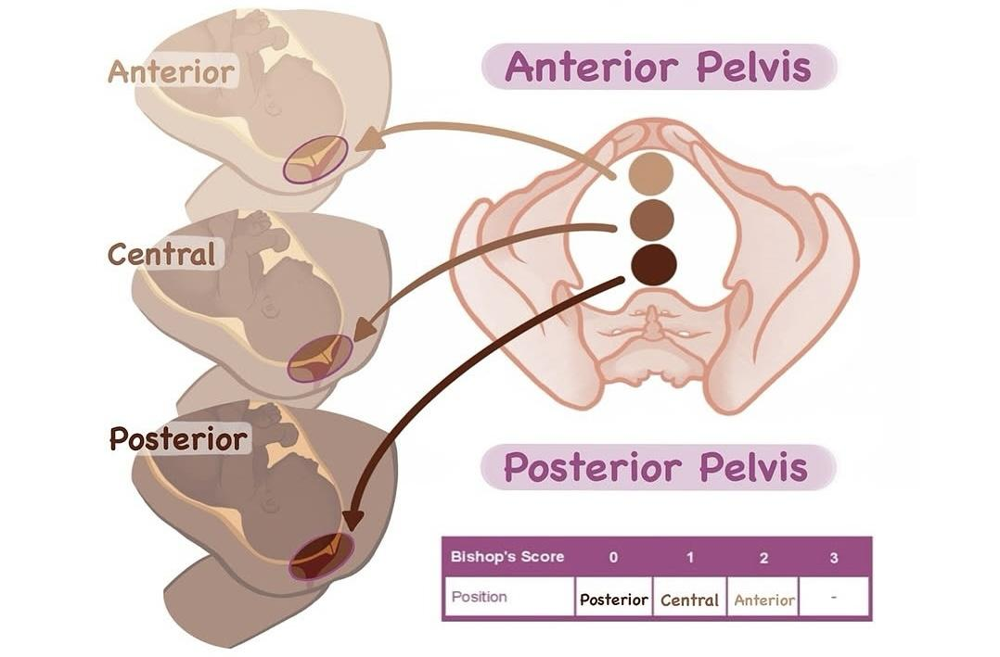
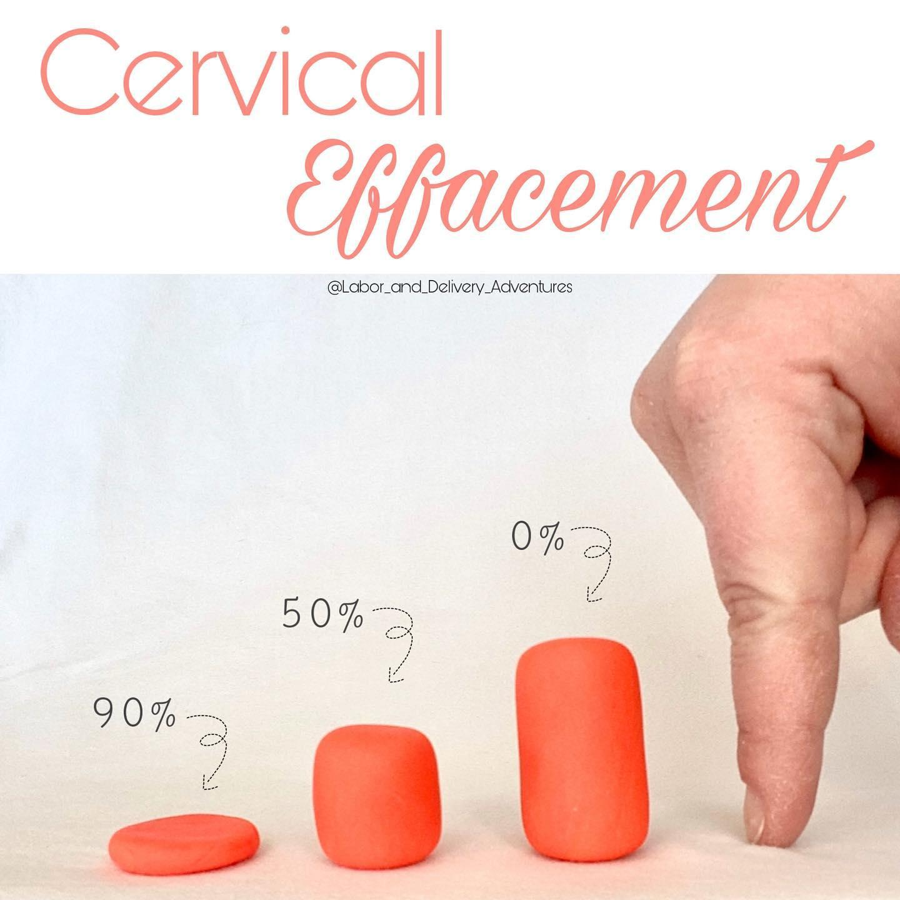

ARREST IN LABOR
You are a HMO in the Obstetrics ward. The midwife is calling you as she is concerned about the following patient, patient is a 40 weeks pregnant lady, first pregnancy. No complications during her pregnancy.
• Task:
• Talk to the nurse regarding the patient
• Explain your further management
Findings
• Mother's vitals: Normal
• Leopolds: FH 40cm
• Longitudinal, cephalic, engagement 3/5
• Bishop score: Cervix is soft, Head station -1, etc
• Baby:
• CTG: no decelerations, FHR 156
• Size of the baby 3kg on USD
Cervix is dilated at 8 cm and has not changed since 10 hour
Labor Overview
- Labor has three stages.
First Stage
- From onset of contractions to full dilation of cervix.
- Full dilation = 10 cm.
- Contractions start irregular, become regular and powerful.
- Cervix prepares until full dilation.
Second Stage
- From full dilation to delivery of the baby.
Third Stage
- Delivery of the placenta.
First Stage Breakdown

- Divided into:
- Latent (early) phase
- Active phase (established labor)
- Latent (early) phase
Latent Phase
- Early contractions
- Irregular
- Some dilation and effacement
- Up to around 4–5 cm dilation
- Duration varies
- Multiparous women dilate faster
Prolonged Latent Phase
- No exact number
- Slow progress raises concern for complications (maternal and fetal)
Active Phase
- From 5 cm to full dilation
- Regular, powerful, longer contractions
- Dilation beyond 4 cm
- Defined by dilation only
- Expected progress:
- At least 0.5 cm/hour
- Less than 2 cm in 4 hours = delayed active phase
- At least 0.5 cm/hour
- Consider:
- Fetal condition (CTG, fetal heart rate)
- Rate of dilation
- Descent/engagement of head
- Contractions
- Previous labor history
- Fetal condition (CTG, fetal heart rate)
- Duration (Royal Women’s Hospital):
- Usually not beyond 18 hours (first labor)
- Not beyond 12 hours (multiparous)
- Usually not beyond 18 hours (first labor)
Key Observations in Labor
- Mother’s vital signs:
- O2 Saturation
- Heart rate
- Blood pressure
- Fetal movement and fetal heart rate
- Intermittent auscultation or CTG
- Intermittent auscultation or CTG
- Contractions:
- Strength
- Frequency
- Duration
- Abdominal palpation (Leopold maneuvers)
- Presentation
- Lie
- Engagement
- If leaking fluid:
- Ask about color
- Concern for meconium stain
- Assess:
- Cervical dilation
- Effacement
- Presentation
- Position
- Station
- Presence/absence of membranes
- If ruptured, assess fluid
Bishop Score

Just remember
- High score: cervix ready for delivery → may do artificial rupture of membranes.
- Low score: other course of action.
CERVICAL DILATION

POSITION OF CERVIX

EFFACEMENT

STATION
Methods of IOL
Bishop score ≤ 6
1. Transcervical catheter
2. Prostaglandins (PG) including:
a. PG- E2 gel
b. Cervidil
Bishops score >/= 7
1. Artificial rupture oi membranes (ARM)
2. Oxytocin infusion
Protracted (Delayed/Prolonged) Labor
- Labor taking longer than expected.
- Three areas to think about:
Uterine Factors
- Nulliparity
- Neuraxial Anesthesia
- Obesity
- Advanced maternal age
- Tocolytics
- Infection
Pelvic Factors
- Poor contractions
- More common in shorter women
- High head station at full dilation
Fetal Factors
- Macrosomia
- Cephalopelvic dystocia/disproportion (picked before labor; requires cesarean)
- Non-occipital positions:
- Transverse lie
- Breech
- Others
- Transverse lie
Case Position
- 8 cm dilation = active phase of first stage
Arrest in Labor
- Different from slow/protracted/delayed labor.
- Definition:
- Cervical dilation ≥ 6 cm
- With or without ruptured membranes
- No change for 4 hours with good contractions
- OR No change for 6 hours with weak contractions after oxytocin
- Cervical dilation ≥ 6 cm
- Slow labor: still dilating, but slowly.
- Case: 10 hours at 8 cm = arrest
Management Differences
Protracted Labor
- “Push it”
- Artificial rupture of membranes
- Oxytocin
- Artificial rupture of membranes
Arrest
- “Pull it”
- Cesarean section
- No point giving oxytocin if membranes ruptured and no progress
- Cesarean section
Active First Stage Management
- Focus on dilation
- Also consider:
- Head engagement
- Contractions
- Head engagement
If Delay Diagnosed
- Artificial rupture of membranes
- Discuss oxytocin (risks, patient-centered)
- Before oxytocin:
- Check presentation
- Check fetal distress
- Rule out obstructed labor
- Consider previous cesarean
- Ongoing:
- Regular vaginal exams
- Bladder status
- Contractions
- Pain
- Exhaustion
- Fetal heart rate
- Position
You are a HMO in the Obstetrics ward. The midwife is calling you as she is concerned about the following patient, patient is a 40 weeks pregnant lady, first pregnancy. No complications during her pregnancy.
• Task:
• Talk to the nurse regarding the patient
• Explain your further management
INTRO
- Jump in, introduce yourself.
- Ask: “Who am I talking to?”
- Nurse/midwife responds she is concerned about a patient.
- Nurse/midwife responds she is concerned about a patient.
- Ask: “How can I help you? What is happening with the patient?”
- Nurse reports:
- Pregnant lady in labor.
- 8 cm dilation for 10 hours with no progress.
- Pregnant lady in labor.
OVERALL STRUCTURE
Mother – Baby – Pelvic
MOTHER
1. HISTORY
OB History
- Is this her first pregnancy? Nulliparous or multiparous?
- Any complications during pregnancy?
- High blood pressure?
- High blood sugar?
- Macrosomia?
- Growth scan / morphology scan details?
- Diabetic lady → regular growth scans?
- High blood pressure?
- When did labor start?
Contractions
- Is she having contractions? (Yes)
- How frequent? → 4 in 10 minutes
- Duration? How long they last?
- Is the interval between contractions decreasing?
Symptoms
- Has she ruptured membranes?
- When? → 10 hours ago
- Is it meconium stained? → No
- When? → 10 hours ago
- Any vaginal bleeding?
- Is the baby still kicking/moving? (Fetal movements)
2. PHYSICAL EXAMINATION
Vitals
- Blood pressure, temperature, pulse rate, saturation.
- Are they stable? → All stable
Leopold’s / Abdominal Palpation
- Lie → Longitudinal
- Presentation → Cephalic
- Position → (Whatever given)
- Engagement → 3/5
- Fetal heart rate → 150
Speculum / Cervical Assessment (Bishop Score Components)
- Dilation → 8 cm
- Length / Effacement
- Consistency → Soft
- Position → (Any: anterior/posterior)
- Station → –1
BABY
- Are we doing CTG? → Yes
- Contraction stress test / CTG monitoring
- Key question:
- Any decelerations? → Yes
- Type of deceleration? Early / Late / Variable
- Early = normal
- Late / Variable = abnormal
- Early = normal
- Any decelerations? → Yes
- (If fetal movements forgotten, can ask again here)
- Any ultrasound for size of baby?
- Baby weight → 3 kg (No macrosomia)
- Baby weight → 3 kg (No macrosomia)
PELVIC
- Has she been examined for cephalopelvic disproportion?
- Nurse likely says no concerns.
- Nurse likely says no concerns.
KEY POINT REMINDERS
- Don’t forget:
- Contractions
- Decelerations
- Symptoms
DIAGNOSIS
- Arrest in the active phase of the first stage of labor
Not:
- Protracted labor
- Delay
- Second stage
- Cephalopelvic disproportion
MANAGEMENT
- Notify obstetric consultant or registrar now
- Continuous CTG and fetal heart rate monitoring
- Continuous monitoring:
- Contractions
- Mother’s vitals
- Cervix
- Contractions
- Prepare for emergency cesarean section
NOTE ON DELAY
- Example: 7 cm → only 1 cm change in 4 hours
- Management options (patient-centered hence ask patient):
- Artificial rupture of membranes
- Oxytocin
- Expectant management